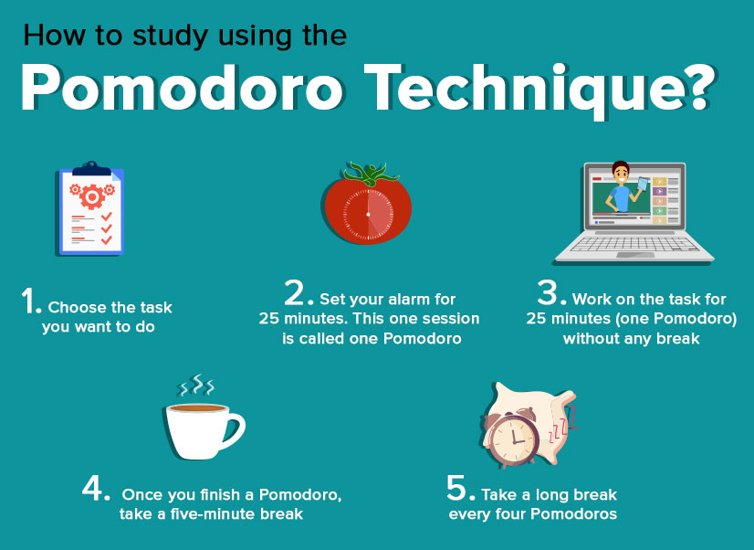

Study Tips
Pomodoro

The Pomodoro Technique works by breaking your work into focused time intervals, typically 25 minutes each, followed by short breaks. Here's a simplified version of
how it works:
1. Choose a task you want to work on.
2. Set a timer for 25 minutes (this is one "Pomodoro").
3. Work on the task with full concentration and without distractions until the timer rings.
4. When the timer rings, take a short break of 5 minutes to relax and recharge. This is a reward for completing one Pomodoro.
5. Repeat steps 1-4 for the next Pomodoro.
6. After completing four Pomodoros, take a longer break, typically 15-30 minutes. This is a more extended break to rest and refocus.
The key idea is to work in short, focused bursts (Pomodoros) followed by regular breaks to maintain your productivity and prevent burnout. This technique helps you manage your time
effectively, stay motivated, and complete tasks with better concentration.
Active Recall

Active recall is a powerful study technique that involves actively engaging with the material you're trying to learn by testing your memory and retrieving information from your brain, rather than
passively reviewing or rereading it. It is based on the idea that actively recalling information during your study sessions helps you strengthen your memory and improve your ability to retrieve
that information later when you need it, such as during exams. Here's how active recall works:
Generate Questions: Start by creating a list of questions related to the material you're studying. These questions can be in the form of flashcards, practice quiz questions, or even questions
you come up with while reviewing the content. The questions should cover key concepts, facts, or topics you want to remember.
Attempt to Answer: Once you have your list of questions, go through them one by one and try to answer them from memory. Don't refer to your notes or textbooks initially. This process forces
you to actively recall the information.
Check Your Answers: After attempting to answer a question, check your answer against your study materials. This step helps you identify any mistakes or gaps in your knowledge.
Repeat and Review: Go through the list of questions multiple times, repeating the process of actively recalling and checking your answers. This spaced repetition helps reinforce your memory over
time.
SQ3R Method
The key idea is to work in short, focused bursts (Pomodoros) followed by regular breaks to maintain your productivity and prevent burnout. This technique helps you manage your time effectively,
stay motivated, and complete tasks with better concentration. The SQ3R Method is a structured reading and study technique that helps individuals better understand and retain information from
textbooks and other written materials. The name "SQ3R" stands for the five steps involved in this method: Survey, Question, Read, Recite, and Review. Here's how each step works:
Survey: Before diving into the text, quickly scan through the material to get an overview. Pay attention to headings, subheadings, bold or italicized text, graphics, and any summarizing sections.
This initial survey will help you get a sense of the content and its organization.
Question: As you continue to survey the text, formulate questions based on what you've seen. What do you want to learn or understand from this material? Creating questions beforehand provides a
purpose for your reading and helps focus your attention on key points.
Read: Begin reading the material actively and attentively. As you read, try to answer the questions you formulated in the previous step. Take notes, underline or highlight key points, and
summarize information in your own words as you go along.
Recite: After you've read a section of the text, pause and try to recite the information you've just learned from memory. This is a form of active recall, which reinforces your understanding of
the material. If you can't recall some information, go back and review that part of the text.
Review: Once you've completed the reading, review your notes, highlighted sections, and the answers to your questions. This step helps consolidate your understanding and reinforces the key points
from the text. You can also create a summary of the material in your own words